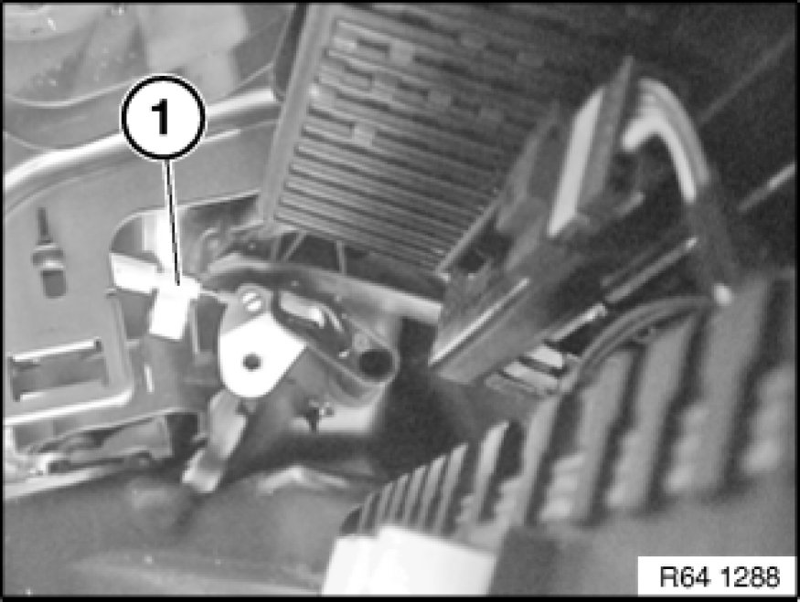
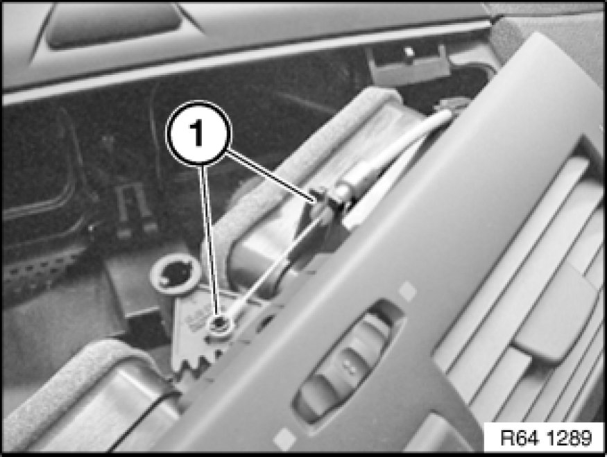

Air Door Cable: Service and Repair
64 11 077 - Removing and installing/replacing Bowden cable for temperable ventilation

Necessary preliminary tasks:
- Remove center fresh air grille Removing and Installing/Replacing Center Fresh-Air Grill
- Remove right glovebox with housing 51 16 366 Removing and Installing Right Glovebox With Housing

Disconnect Bowden cable (1).

Disconnect Bowden cable from mountings (1) and feed out.
Installation:
Make sure Bowden cable can move freely.
If necessary, perform function test prior to assembly.